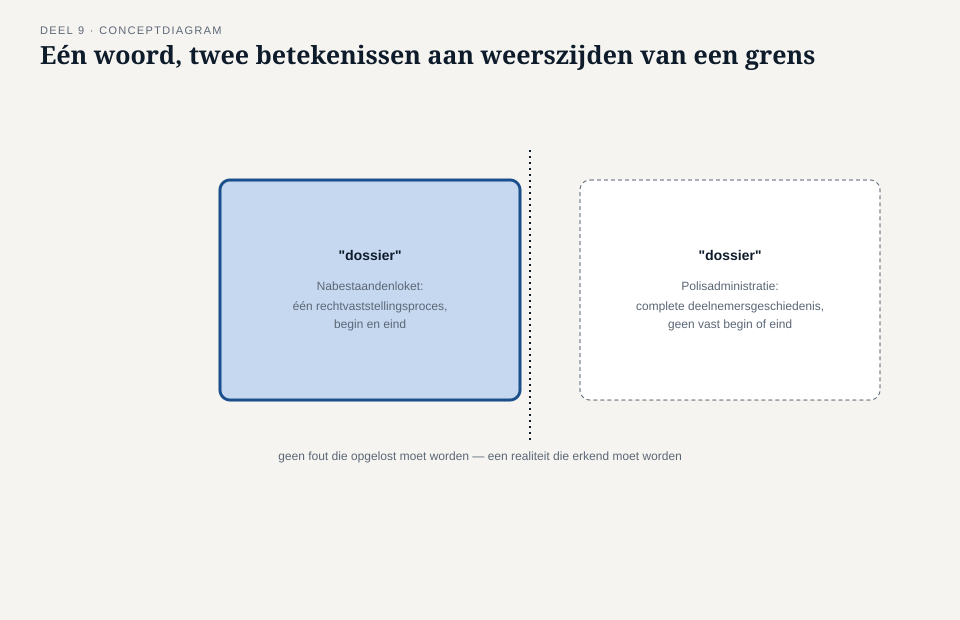
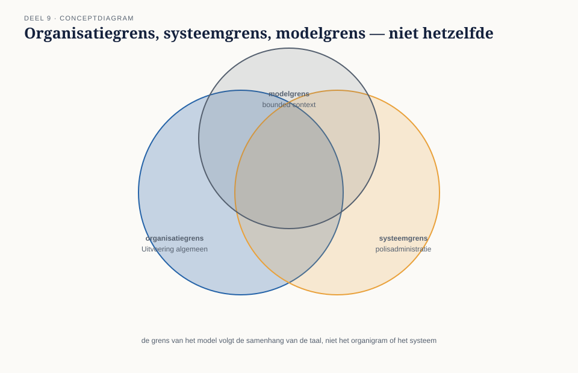
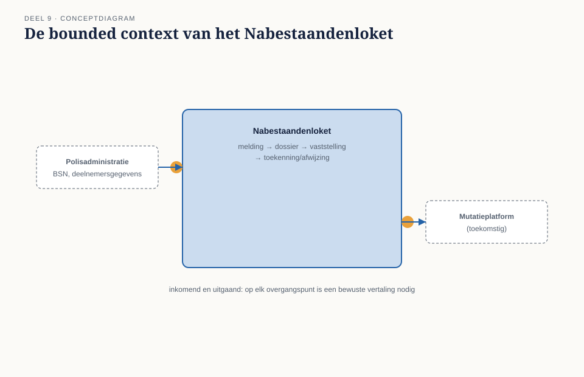
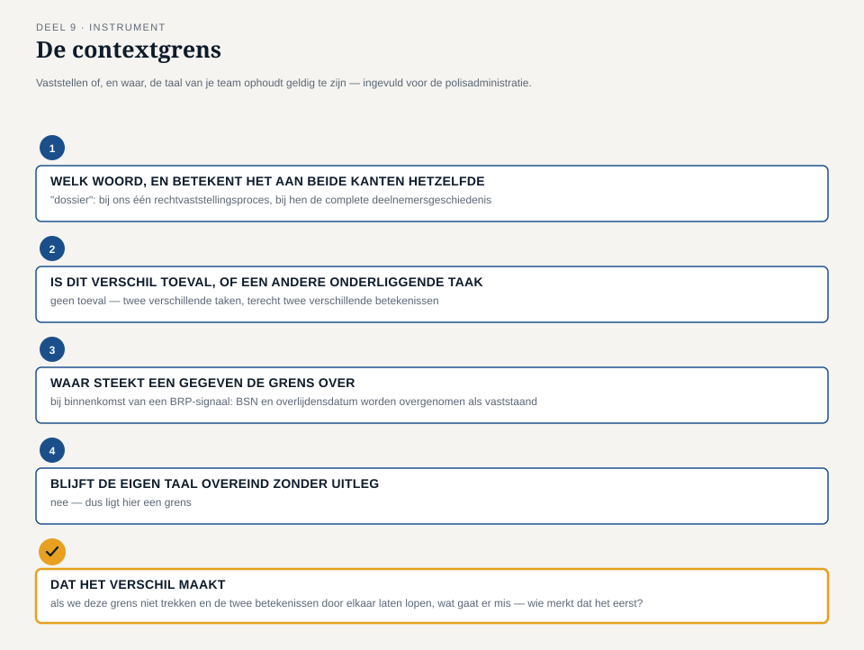

Deel 9 — Bounded context: de grens van één model
Slidedeck · Ductus-cursus Domain-Driven Design · niveau 1 · deel 9 van 30 · 27 slides
Slide 1 — Titel
Domain-Driven Design — deel 9 Bounded context: de grens van één model Niveau 1: fundament · voorbereiding op de iSAQB Advanced-module DDD
Slide 2 — Terugblik deel 8
Domain service, factory, repository — het model kan nu functioneren. Openstaande vraag: waar houdt het op?
Slide 3 — Een vraag om mee te beginnen
Als iemand van de polisadministratie “dossier” zegt — bedoelt diegene hetzelfde als jullie?
(Antwoorden verzamelen. We komen er aan het eind op terug.)
Slide 4 — Waar we het over gaan hebben
- Waarom elk model een grens nodig heeft
- Organisatie, systeem en model: drie verschillende grenzen
- Wat er gebeurt op de grens
- De contextgrens
Slide 5 — De casus
“Bedoelen we hetzelfde dossier?”
Slide 6 — Tijmens vraag
“De polisadministratie kent ook iets dat ‘dossier’ heet. Bedoelen we daar hetzelfde mee?” — Tijmen Oosterhuis
Slide 7 — Daans aanname
“Een dossier is gewoon een verzameling velden bij een deelnemersnummer — alles wat ooit is vastgelegd, in één scherm.” — Daan Kuiper
Slide 8 — Willemijns weerwoord
“Ons dossier gaat over één ding: het vaststellen van het recht op nabestaandenpensioen. Een begin — een melding. Een eind — een toekenning of afwijzing.” — Willemijn Brugman
Slide 9 — Corné’s vraag
“Waar houdt jullie model op, en wat gebeurt er op het moment dat het de grens over gaat?” — Corné Pauwels
Slide 10 — De bounded context
De expliciete grens waarbinnen een model — en zijn taal — geldig en consistent is.
Slide 11 —

Eén woord, één rand — en buiten die rand hetzelfde woord met een andere betekenis
Slide 12 — Niet hetzelfde als deel 3
Domeinindeling (deel 3): waar zit de complexiteit? Bounded context (deel 9): waar houdt de taal op geldig te zijn? Twee verschillende vragen — die soms samenvallen.
Slide 13 — De verleiding
De grens ligt toch gewoon bij de afdeling? Bij het systeem?
Slide 14 — De organisatiegrens is niet de modelgrens
Saïda hoort niet bij Nabestaandenzaken — en spreekt tóch de taal van het model mee.
Slide 15 — De systeemgrens is niet de modelgrens
“Dossier” bestaat aan beide kanten van de systeemgrens — met een andere betekenis.
Slide 16 —

Organisatiegrens, systeemgrens, modelgrens: drie vlakken die elkaar overlappen, niet samenvallen
Slide 17 — De vraag die wél houvast geeft
Blijft de taal hier consistent — of moet ik uitleggen wat ik bedoel?
Slide 18 — Wat er gebeurt op de grens
Geen afsluiting, wel een vertaalpunt. Wat betekent een gegeven, zodra het de grens oversteekt?
Slide 19 —

De bounded context van het Nabestaandenloket, met twee gemarkeerde overgangspunten
Slide 20 — Nog niet aan de orde
Hóe die relatie precies wordt ingericht — partnership, shared kernel, anti-corruption layer — volgt in niveau 2.
Slide 21 — De werkvorm van dit deel
De contextgrens
Ligt hier een grens — en zo ja, waar?
Slide 22 — De vier vragen
Betekent hetzelfde woord aan beide kanten hetzelfde? Toeval, of wijst het op een andere taak? Waar precies steekt een gegeven de grens over? Blijft onze eigen taal overeind zonder uitleg?
Slide 23 — Veld 5: het veld dat het verschil maakt
Als we deze grens niet trekken,
wat gaat er dan mis —
en wie merkt dat als eerste?
Slide 24 —

Het invulblad — ingevuld voor de relatie met de polisadministratie
Slide 25 — Rutgers conclusie
“Als we deze grens niet trekken, krijgt Willemijn op een dag de complete historie van een deelnemer te zien in plaats van alleen het lopende dossier.” — Rutger Zeeman
Slide 26 — Negen instrumenten, één geheel
Complexiteitstoets, taalkaart, domeinindeling, modeltoets, objectkeuzeblad, aggregaatschets, gebeurtenislijst, bouwsteenkaart, contextgrens — niveau 1 is compleet.
Slide 27 — Volgende keer
Deel 10 — examentraining en capstone: verdedig het complete Nabestaandenloket-model.